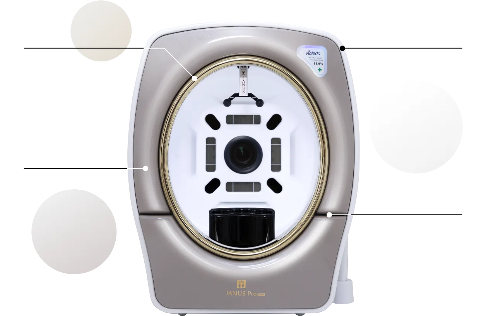

홈 > 병원소개 > 보유장비 > 야누스프로
야누스프로 선라이크 (JANUS PRO)
3방향·4가지 빛으로 촬영해 18가지 항목을 분석하는 3D 얼굴 피부 분석기 — 분석 무료
갈창림 한의원은 경상북도 경산시 하양읍에 있습니다. 경산·하양·진량·와촌, 영천 금호, 대구 동구(안심)에서 피부 분석을 받고 싶으신 분은 시술 없이 분석만 무료로 받으실 수 있으며, 화~일요일(토·일 포함)에 가능합니다.
JANUS PRO SUNLIKE · 피아이이
눈으로 보이지 않는 피부 속까지
먼저 확인합니다
야누스프로 선라이크는 얼굴을 정면·좌·우 세 방향에서, 일반광·교차 편광·평행 편광·UV광 네 가지 빛으로 촬영하고 AI가 피부 상태를 18가지 항목으로 분석하는 3D 얼굴 피부 분석기입니다.
자연광에 가까운 Sunlike LED 조명으로 촬영해 색을 실제에 가깝게 보여 주고, 맨눈으로는 잘 보이지 않는 깊은 색소와 붉은 기, 모공, 주름을 확인할 수 있습니다. 갈창림 한의원은 시술 전 이 분석으로 피부 상태를 확인하고 시술을 계획합니다.
- 촬영정면 · 좌 · 우 3방향
- 광원일반광 · 교차 편광 · 평행 편광 · UV광
- 조명자연광에 가까운 Sunlike LED
- 분석모공·주름·색소침착 등 18가지 항목 AI 분석

TREATMENTS
야누스프로 분석을 쓰는 곳
분석 결과로 같은 고민이라도 원인을 나누어 시술을 고릅니다.
- 기미·색소색소가 얕은지 깊은지, 기미인지 잡티인지 구분해 파장과 횟수를 정합니다. 기미·색소 보기 →
- 모공·피부결모공의 크기와 분포, 피부결을 보고 실펌X·제네시스토닝·필링 가운데 고릅니다. 모공 보기 →
- 여드름·붉은자국염증과 붉은 기, 피지 상태를 확인해 치료 순서를 정합니다. 여드름 보기 →
- 리프팅피부 두께와 처진 부위를 보고 볼뉴머와 리니어펌을 설계합니다. 디자인리프팅 보기 →
- 스킨부스터수분·탄력·피부결 상태에 맞는 스킨부스터 성분을 고릅니다. 스킨부스터 보기 →
HOW WE USE
갈창림 한의원이 야누스프로를 쓰는 방식
INFO
비용 · 시간 · 분석 항목
- 비용
- 무료시술 없이 분석만 가능
- 시간
- 약 10분촬영과 설명 포함
- 분석 항목
- 18가지모공·주름·색소침착 등
- 예약
- 네이버 예약·전화화~일요일
피부 분석과 시술은 대표원장이 진료하는 화~일요일에 받으실 수 있습니다 (월요일은 피부 시술을 하지 않습니다).
※ 분석 결과는 시술 계획을 돕는 참고 자료이며, 최종 판단은 진찰과 함께 이루어집니다.
FAQ
자주 묻는 질문
Q. 경산·하양에서 무료 피부 분석을 받을 수 있나요?
네. 경산시 하양읍 갈창림 한의원에서 야누스프로 선라이크 피부 분석을 무료로 받으실 수 있습니다. 시술을 받지 않으셔도 분석만 가능합니다.
Q. 분석은 얼마나 걸리나요?
촬영과 결과 설명까지 10분 정도 걸립니다.
Q. 어떤 것을 알 수 있나요?
모공, 주름, 색소침착, 붉은 기, 피부결 등 18가지 항목을 분석하며, 맨눈으로는 잘 보이지 않는 깊은 색소와 붉은 기도 확인할 수 있습니다.
Q. 분석 후 꼭 시술을 받아야 하나요?
아닙니다. 분석 결과와 함께 필요한 관리를 안내해 드리며, 시술 여부는 충분히 생각하신 뒤 정하시면 됩니다.
작성·검토갈창림 대표원장 (한의사)최종 검토 2026년 11월 17일